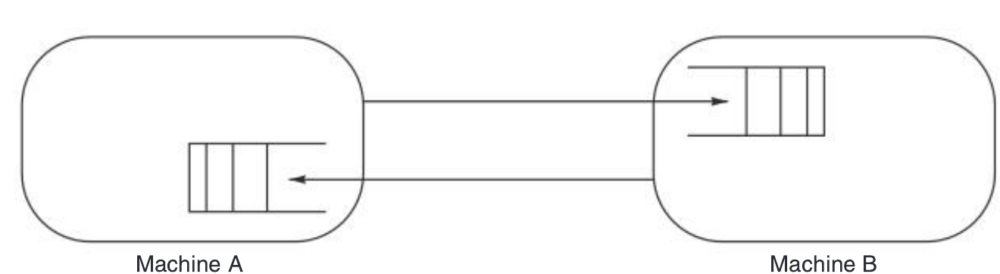
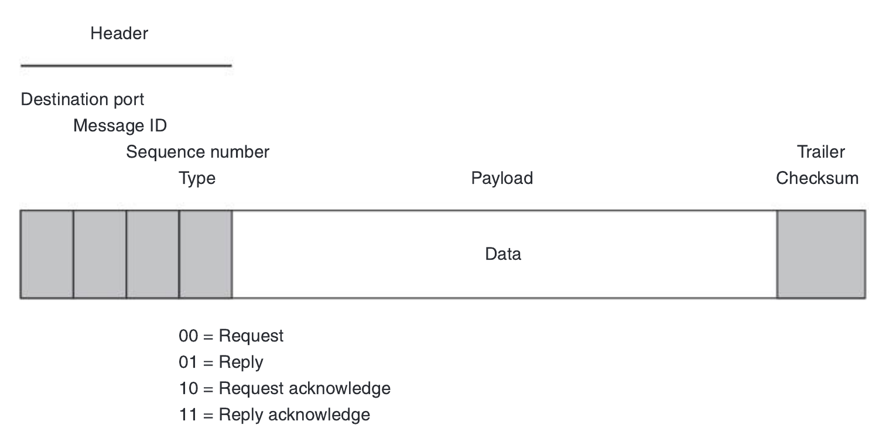
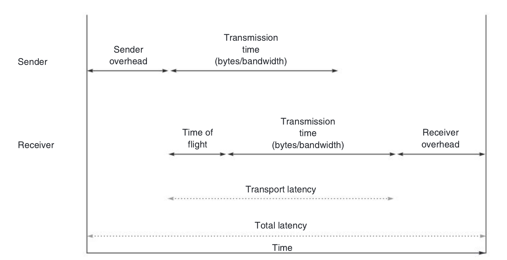
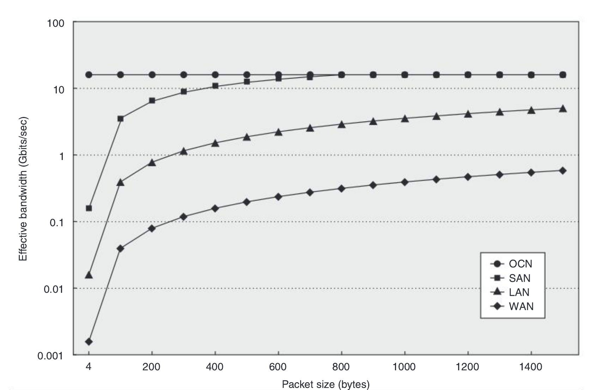

F.2 两个设备的互连
本节介绍理解两个联网设备之间如何通信所需的基本概念，其中包括两类情况的处理：一是接收方可能还没准备好处理发送方发来的数据，二是传输中可能出错。为了便于理解，这里先把黑盒网络设想成一个理想网络，它的行为就像两个设备之间的简单专用链路。图 F.3 画出了这种情形：单向导线从设备 A 连到设备 B，另有单向导线从 B 连到 A，每个端节点都有一个缓冲区存放数据。无论网络多复杂、是不是专用链路，每个端节点设备都有一条连到网络的连接，用来向网络注入信息、从网络接收信息。下面先介绍端节点为开始和完成通信必须完成的基本功能，再讨论网络介质以及网络为完成通信必须完成的基本功能，然后给出一个简单的性能模型，并用几个例子说明关键网络参数的影响。

网络接口的功能：组装和处理消息
假设我们要让两个联网的设备互相读取对方存储器中的一个字。发送或接收的信息单位称为消息。为了取得所需的数据，两个设备首先都要组装并发送一种请求消息，其中包含所需数据在对方设备中的地址。接收方根据这个地址（即存储器位置或操作数位置）找到所请求的信息。处理完请求后，每个设备再组装并发送另一种消息，即包含数据的应答。地址和数据信息通常称为消息的有效载荷（payload）。
除了有效载荷，每条消息还带有一些控制位，网络靠它们投递消息，接收方靠它们处理消息。最典型的控制位有两类：一类区分不同类型的消息，如请求、应答、请求确认和应答确认；另一类让网络能把信息正确地送到目的地。这些附加的控制位按照相对于有效载荷的位置，编码在消息的头部和/或尾部。例如，图 F.4 给出了图 F.3 中简单专用链路网络的消息格式。这个例子的有效载荷只有一个字，但有些互连网络的消息可以包含几千个字。
消息在网络上传输之前要先组装好；同样，从网络收到消息后也要处理。这些功能以及下面介绍的其他功能，都由端节点上的网络接口（也称通道适配器）承担。网络接口用某种直接存储器访问（DMA）引擎和链路驱动器向网络发送消息、从网络接收消息，还可能用一些专用存储器或寄存器缓冲发出和收到的消息。网络接口硬件的形态取决于网络领域和网络的设计规格：可能就是通信设备本身，别无他物（如 OCN 和某些 SAN）；也可能是一块单独的卡，上面集成了若干嵌入式处理器、DMA 引擎和几千 MB 的 RAM（如许多 SAN 以及大多数 LAN 和 WAN）。
除了硬件，网络接口还可以包括完成所需操作的软件或固件。即使是图 F.3 这样简单的例子，也可能要调用消息传递软件，把请求和应答转换成带有相应头部的消息。这样，用户应用程序就不必操心消息的组装和处理，这些工作可以在较低层次上自动完成。应用程序通常与操作系统或运行时系统配合收发消息。每个设备上可能有许多进程同时运行、共享网络，操作系统不能让发给一个进程的消息被另一个进程收到。因此，消息传递软件必须有区分不同进程的保护机制。一种做法是扩展头部，加入一个发送进程和目标接收进程都知道的端口号。

除了组装和处理消息，端节点还要完成其他一些功能，才能在通信设备之间建立通信。硬件支持可以减少工作量，但有些工作可以由软件完成。例如，大多数网络都规定了一次可以传送的最大信息量，即最大传输单元，以便合理确定网络缓冲区的大小。长于最大传输单元的消息要分成较小的单元在网络上传输，这些单元称为包（或数据报）。包到达目的端节点后，先重新装配成消息，再交给应用程序。在包头中加一个消息 ID 字段，就能把同一条消息的包与其他包区分开来。如果包乱序到达目的地，装配成消息时还要重新排序，为此包头中通常另设一个序号字段。
端节点在网络上开始和完成一次通信所遵循的一系列步骤，称为通信协议。发送和接收的步骤一般是对称的，只是次序相反。为了加快执行速度，通信协议由软件和硬件共同实现。例如，许多网络接口卡都有硬件定时器，并在硬件上支持以下工作：把消息拆分成包并重新装配、计算循环冗余校验（CRC）校验和、处理虚拟存储地址，等等。
有些网络接口带有额外的硬件，把协议处理工作从主机上卸载下来，如 LAN 和 WAN 中的 TCP 卸载引擎。但 SAN 这类互连网络要求低延迟，即使采用较轻量的通信协议（如消息传递接口 MPI），这样做可能也还不够。绕过操作系统（OS）可以进一步提高通信性能。实现 OS 旁路的办法是直接在网络接口的存储器中分配消息缓冲区，让应用程序直接读写这些缓冲区，从而避免额外的存储器到存储器复制。这类协议称为零拷贝协议或用户级通信协议。这种做法仍然可以提供保护：初始化时调用 OS 分配这些缓冲区，再由硬件阻止未经授权的访存。
一般来说，端节点设备通过网络发送一条消息，需要以下部分或全部步骤：
- 应用程序执行一个系统调用，把要发送的数据复制到操作系统缓冲区或网络接口缓冲区中，（必要时）把消息分成若干个包，并为各个包组装头部和尾部。
- 计算校验和，并把它放进包的头部或尾部。
- 启动定时器，由网络接口硬件把包发送出去。
接收消息的步骤次序相反：
- 网络接口硬件接收各个包，把它们放进自己的缓冲区或操作系统缓冲区。
- 为每个包计算校验和。如果与发送方的校验和一致，接收方就向包的发送方回送一个确认；如果不一致，就删除这个包，并认为发送方会在相应的定时器超时后重发这个包。
- 所有包都通过检验以后，系统把消息重新装配起来，把数据复制到用户地址空间，并通知相应的应用程序。
发送方还必须对包的确认作出反应：
- 发送方收到确认后，从缓冲区中释放相应包的副本。
- 如果发送方没有收到确认，而是等到了超时，就重发这个包，并重新启动定时器。
端节点上要实现协议来支持通信；同样，网络结构中的物理层、数据链路层和网络层也要使用协议。这几层主要负责包传输、流量控制、差错处理以及下面介绍的其他功能。
网络的基本结构和功能：介质与外形规格、包传输、流量控制和差错处理
包在源端准备好以后，由网络接口中的专用硬件注入网络。这些硬件包括一些收发器电路，用来驱动物理网络介质，介质可以是电的，也可以是光的。介质的类型和外形规格在很大程度上取决于互连距离，即要在多远的距离上维持一定的信号速率（如传输速度）。
- 芯片或多芯片模块上，距离在 1 cm 以内时，通常可以用中上层的铜金属层做互连，每根线的信号速率可达数 Gbps。
- 电路板、中板和背板上印制的十几层或更多层铜走线，可以在大约 1 m 的距离上达到 Gbps 级的差分对信号速率。
- 5E 类非屏蔽双绞铜线可以在 100 m 的距离上达到 0.25 Gbps 的传输速度。
- 同轴铜缆可以在千米级距离上提供 10 Mbps 的速率。
在这些导体线路上，通常可以牺牲距离来换取更高的传输速度，但只能换到一定程度。光介质则能在千米级距离上提供更高的传输速度：多模光纤可以在几千米的距离上支持 100 Mbps 的传输速率；更贵的单模光纤可以在数千米的距离上支持 Gbps 级的传输速度。波分复用能把光纤的带宽提高到原来的若干倍，倍数等于所用的波长数。
驱动网络链路的硬件中可能还有一些编码器，把信号编码成适合给定传输距离的非二进制格式。编码技术可以采用多电平、冗余、数据与控制的轮换（如 4b5b 编码），和/或保证单位时间内有最少次数的信号跳变，以便接收方恢复时钟。信号在接收端解码，包存入相应的缓冲区。这些操作都在网络的物理层完成，细节不在本附录的讨论范围之内，好在我们不必操心这些细节。从数据链路层及更高层次看，物理层可以看作一条很长的、不分级的线性流水线，信号以波的形式在网络传输介质中传播。以上这些功能一般统称为包传输。
除了包传输，网络硬件和软件还要在数据链路层和网络协议层共同保证包的可靠投递。这包括两项职责：一是防止发送方发包的速率超过接收方的处理速度；二是保证包在传输中既不损坏，也不丢失。第一项职责有两种办法：一种是接收方缓冲区满时丢弃收到的包，之后再通知发送方重发；另一种是缓冲区满时通知发送方停止发包，等缓冲区有空间容纳更多的包时再通知它恢复。后一种策略一般称为流量控制。
除了发送方和接收方之间的简单握手，实现流量控制还有几种常用的有趣技术，比较流行的是 Xon/Xoff（也称 Stop & Go）和基于信用（credit-based）的流量控制。
- Xon/Xoff。 缓冲区占用量达到高水位时，接收方通知发送方停止发包；降到低水位时，通知发送方恢复发包。两个水位之间留有一定的迟滞，以减少通知次数。通知以「停」（stop）和「行」（go）信号的形式发送，可以通过附加的控制线传送，也可以编码在控制包中。
- 基于信用的流量控制。 通常在发送方设一个信用计数器，初值等于接收方的缓冲区数。发送方每发出一个包，就把信用计数器减 1。接收方每从缓冲区中取走一个包，就以控制包的形式向发送方送回一个信用；发送方收到信用后，把计数器加 1。
这些技术实质上都是在控制包流入网络：接收方达到低水位标志时，或者发送方的信用用完时，就抑制发送方注入包。
Xon/Xoff 产生的控制流量通常比基于信用的流量控制少得多，因为只在缓冲区占用量越过高水位或低水位时才发送通知。另一方面，基于信用的流量控制所需的缓冲区还不到 Xon/Xoff 的一半。Xon/Xoff 的缓冲区必须足够大，保证在「停」信号到达发送方之前不会溢出；基于信用的流量控制则不会溢出，因为发送方用完信用就会停止发送。无论哪种方案，只有缓冲区相对于通信距离足够大，才能充分利用链路带宽。
下面用一个简单的例子比较两种流量控制技术对缓冲区的需求，例子覆盖了各个互连网络领域。
例题 一个专用链路网络连接两个设备，每条链路每个方向的原始数据带宽为 8 Gbps。一个设备连续不断地向另一个设备发送 100 字节（含头部）的包，以充分利用网络带宽。如果只考虑链路传播延迟，互连距离分别为 1 cm、1 m、100 m 和 10 km 时，基于信用的流量控制至少需要多少信用和多少缓冲空间？与 Xon/Xoff 相比，这一最小缓冲空间如何？
解答 开始时，接收方缓冲区为空，发送方的信用数等于缓冲区容量。发送方每发出一个包就消耗一个信用。要让发送方以网络速度持续发包，第一个送回的信用必须在发送方用完信用之前到达。收到第一个信用之后，发送方收回信用的速率就与发包的速率相同。由于只考虑链路上的传播延迟，不考虑其他延迟或开销，因此假定发送方和接收方的处理时间为零。从发送方开始发送第一个包，到第一个信用回到发送方，所需时间等于往返传播延迟，即发往接收方的包的传播延迟加上送回发送方的信用的传播延迟。这个时间必须小于等于包的发送时间乘以初始信用数：
\[ \text{包传播延迟} + \text{信用传播延迟} \le \frac{\text{包长}}{\text{带宽}} \times \text{信用数} \]
光速约为 300,000 km/s，假设在导体中能达到光速的 66%。于是，各距离所需的最小信用数由下式给出：
\[ \left( \frac{\text{距离}}{2/3 \times 300{,}000\ \text{km/s}} \right) \times 2 \le \frac{100\ \text{字节}}{8\ \text{Gbit/s}} \times \text{信用数} \]
每个信用代表一个包大小的缓冲区项，因此每个设备所需的最小信用数（相应地也是最小缓冲空间）为：1 cm 和 1 m 时为 1，100 m 时为 10，10 km 时为 1000 个包。Xon/Xoff 的这一最小缓冲区对应两段：一段从高水位到缓冲区顶部，另一段从低水位到缓冲区底部。再加上两个水位之间为减少通知而设的迟滞，Xon/Xoff 的最小缓冲空间就超过了基于信用的流量控制的两倍。
实现了流量控制的网络不需要丢包，有时称为无损网络；会丢包的网络有时称为有损网络。两种网络处理包的方式只有这一点不同，却大大限制了路由、拥塞、死锁、可靠性等其他相关网络问题能够采用的解决方案，本附录后面会看到这一点。这一差别对性能的影响也很大：丢弃的包必须重传，既要多占链路带宽，又要承受额外的延迟。正是行为和性能上的这些差别，最终决定了某些解决方案只适用于某些互连网络域。例如，在较短距离上传送包的网络（如 OCN 和 SAN）大多实现流量控制，而在较长距离上传送包的网络（如 LAN 和 WAN）大多设计成会丢包。原因在于，距离较短时，把流量控制信息传回发送方的延迟可以忽略不计，距离较长时则不然。通常运行的应用类型也会影响无损网络与有损网络的选择。例如，Web 浏览器这类因特网客户端发出的包被丢弃，只影响相应用户看到的延迟；但并行应用中某个进程发出的包如果被丢弃，而这个包的延迟又处在关键路径上，应用的总执行时间就可能大大增加。
第二项职责是保证包在传送途中既不出错也不丢失，办法是实现一些机制，检测传输错误并从中恢复。在包格式中加入校验和或其他检错字段（如图 F.4 所示），接收方就能检测出错误：发送包时计算这一冗余信息，收到包时加以检查。包通过检查后，接收方以控制包的形式发回一个确认。注意，这个确认控制包可以同时携带流量控制信息（如一个 credit 或一个停止信号），从而减少控制包的开销。前面讲过，最常用的错误恢复办法是用定时器记下每个包的发送时间；如果确认到达之前定时器已经超时，就认为这个包已丢失或传错，于是重发这个包。
除了包传送、流量控制和可靠性，跨越网络及其端节点的通信协议还要处理许多其他问题。例如，来自不同厂商的两台设备，在一个字内的字节顺序可能不同（大端与小端字节序），协议必须在交付过程中把每个字的字节顺序颠倒过来。延迟的包可能在卡住一段时间后又继续传送，因此协议还必须防止出现重复包。根据系统需求，协议可能还要让各项操作流水进行，以提高性能。最后，连接的设备多于两台时，协议可能还要处理网络拥塞，防止性能下降，这一点在 F.7 节讨论。
性能刻画：延迟与有效带宽
前面讲了两台设备之间收发消息的基本步骤，下面讨论性能。我们先讨论传送单个包的延迟，再讨论有效带宽（也称吞吐率），即在包一级把多个包的传输在网络上流水进行时所能达到的带宽。
图 F.5 给出了单个包延迟的基本组成部分。后面几节揭开「黑盒」网络的内部之后，其中一些延迟成分还会进一步细分。图 F.5 中的时间参数适用于许多互连网络域：芯片内部、电路板上的芯片之间、机箱内的电路板之间、计算机内的机箱之间、集群内的计算机之间、集群之间，等等。各项的数值可能变化，但延迟的组成部分不变。

下面这些术语常常用得很随意，容易造成混淆，因此我们在这里给出更准确的定义：
- 带宽 严格地说，传输介质的带宽是指一段频率范围，在这段范围内，该介质引入的每单位长度衰减低于某个阈值。带宽必须与传输速率区分开，传输速率是单位时间内经介质传送的信息量。例如，20 世纪 90 年代末，电话线语音信道提供的带宽固定为 3 KHz，调制解调器通过编码更多的电压电平，让每个信号周期携带更多的位，成功地提高了传输速率。不过，为了与更通行的含义一致，我们用「带宽」指信息能够传送的最大速率，这里的信息包括包头、有效载荷和包尾。带宽的单位传统上是位每秒，有时也用字节每秒。「带宽」也用来指介质（即网络链路）的实测速率。聚合带宽指网络提供的总数据带宽；有效带宽或吞吐率指聚合带宽中由网络交付给应用的那一部分。
- 飞行时间 包的第一位到达接收方所需的时间，包括链路上的传播延迟，以及链路中继器、网络交换机等网络中其他硬件造成的延迟。飞行时间的量级，WAN 可以是毫秒，LAN 是微秒，SAN 是纳秒，OCN 是皮秒。
- 传输时间 包通过网络所需的时间，不包括飞行时间。一种测量办法是取包的第一位与最后一位到达接收方的时间差。按定义，传输时间等于包的大小除以网络链路的数据带宽。这一度量假定没有其他包争用这一带宽，即网络是零负载（无负载）的。
- 传送延迟 飞行时间与传输时间之和，也就是包在互连网络中停留的时间。换句话说，传送延迟是从包的第一位注入网络到最后一位到达接收方之间的时间。它不包括发送方准备包的开销，也不包括包到达接收方后的处理开销。
- 发送开销 端节点准备好包（注意是包，不是消息）并把它注入网络所需的时间，包括硬件和软件两部分。端节点在这段时间里一直处于忙碌状态，所以称为「开销」。端节点空闲下来之后，任何延迟都算作传送延迟的一部分。我们假定开销由一个常数项加一个随包大小变化的可变项组成。常数项包括存储分配、准备包头、设置 DMA 设备等；可变项主要来自缓冲区之间的复制，对很短的包通常可以忽略不计。
- 接收开销 端节点处理收到的包所需的时间，包括硬件和软件两部分。这里同样假定开销由一个常数项加一个随包大小变化的可变项组成。一般来说，接收开销大于发送开销，例如接收方可能要承担中断的代价，或者要把包重新排序、重组成消息。
包的总延迟可以用下面的代数式表示：
\[ \text{延迟} = \text{发送开销} + \text{飞行时间} + \frac{\text{包大小}}{\text{带宽}} + \text{接收开销} \]
下面看一看，从 OCN 到 SAN、LAN 再到 WAN，跨越各个互连网络域时，传送延迟的各个成分以及发送开销、接收开销的重要性怎样变化。
例题 假设在 OCN、SAN、LAN 或 WAN 中，用一个专用链路网络互连两台设备，每条链路每个方向的数据带宽为 8 Gbps。两台设备之间要传送 100 字节的包（包括包头）。端节点每个包的发送开销为 \(x + 0.05\ \text{ns/字节}\)，接收开销为 \(4/3(x) + 0.05\ \text{ns/字节}\)，其中 \(x\) 取这几类网络的典型值：OCN 为 0 μs，SAN 为 0.3 μs，LAN 为 3 μs，WAN 为 30 μs。设互连距离分别为 0.5 cm、5 m、5000 m 和 5000 km，并假定飞行时间只包括链路传播延迟（即没有交换或其他延迟来源），计算从一台设备向另一台设备发送包的总延迟。
解答 利用上面的表达式和上一个例题中导体传播延迟的算法，代入各网络的参数，就能求出各自的包总延迟。OCN 的情形为：
\[ \begin{aligned} \text{延迟} &= \text{发送开销} + \text{飞行时间} + \frac{\text{包大小}}{\text{带宽}} + \text{接收开销}\\ &= 5\ \text{ns} + \frac{0.5\ \text{cm}}{2/3 \times 300{,}000\ \text{km/s}} + \frac{100\ \text{字节}}{8\ \text{Gbit/s}} + 5\ \text{ns} \end{aligned} \]
把各项都换算成纳秒（ns），OCN 的结果为：
\[ \begin{aligned} \text{总延迟（OCN）} &= 5\ \text{ns} + \frac{0.5\ \text{cm}}{2/3 \times 300{,}000\ \text{km/s}} + \frac{100 \times 8}{8}\ \text{ns} + 5\ \text{ns}\\ &= 5\ \text{ns} + 0.025\ \text{ns} + 100\ \text{ns} + 5\ \text{ns}\\ &= 110.025\ \text{ns} \end{aligned} \]
代入 SAN 的相应数值，得到的延迟为：
\[ \begin{aligned} \text{总延迟（SAN）} &= 0.305\ \mu\text{s} + \frac{5\ \text{m}}{2/3 \times 300{,}000\ \text{km/s}} + \frac{100\ \text{字节}}{8\ \text{Gbit/s}} + 0.405\ \mu\text{s}\\ &= 0.305\ \mu\text{s} + 0.025\ \mu\text{s} + 0.1\ \mu\text{s} + 0.405\ \mu\text{s}\\ &= 0.835\ \mu\text{s} \end{aligned} \]
代入 LAN 的相应数值，得到的延迟为：
\[ \begin{aligned} \text{总延迟（LAN）} &= 3.005\ \mu\text{s} + \frac{5\ \text{km}}{2/3 \times 300{,}000\ \text{km/s}} + \frac{100\ \text{字节}}{8\ \text{Gbit/s}} + 4.005\ \mu\text{s}\\ &= 3.005\ \mu\text{s} + 25\ \mu\text{s} + 0.1\ \mu\text{s} + 4.005\ \mu\text{s}\\ &= 32.11\ \mu\text{s} \end{aligned} \]
代入 WAN 的相应数值，得到的延迟为：
\[ \begin{aligned} \text{总延迟（WAN）} &= 30.005\ \mu\text{s} + \frac{5000\ \text{km}}{2/3 \times 300{,}000\ \text{km/s}} + \frac{100\ \text{字节}}{8\ \text{Gbit/s}} + 40.005\ \mu\text{s}\\ &= 30.005\ \mu\text{s} + 25000\ \mu\text{s} + 0.1\ \mu\text{s} + 40.005\ \mu\text{s}\\ &= 25.07\ \text{ms} \end{aligned} \]
距离越长，飞行时间在延迟中所占的比例越大，出错的可能性也越大。WAN 和 LAN 采用更复杂、更费时的通信协议，部分原因就在这里，而这些协议又增大了发送开销和接收开销。另一个原因是标准化的需要。此外，设备数从几十台到几百台、几千台，再到成千上万台，各互连网络域上运行的典型应用对协议提出的要求不同，协议也随之更加复杂。后面几节讨论连接两台以上的设备时，我们再考虑这一点。从上面的例题可以看出，WAN 和某些 LAN 中，飞行时间里的传播延迟成分非常大，其他延迟成分（包括发送开销和接收开销）实际上都可以忽略。SAN 和 OCN 则不然，它们的传播延迟与开销和传输延迟相比微不足道。还要记住，上面的例题只计入了链路本身的传播延迟，忽略了飞行时间中由交换机和网络中其他硬件造成的延迟。在不拥塞的网络中，WAN 和 LAN 的交换机延迟一般比开销和链路传播延迟小；但多处理器 SAN 和多核 OCN 中未必如此，后面几节会看到这一点。
到目前为止，我们讨论的是单个包的传送，并算出了相应的端到端包总延迟。要计算两台联网设备之间的有效带宽，就必须考虑它们之间传送的连续包流。要记住，任何网络在给定的成本和功耗目标下优化时，除了要尽量减小包延迟，目标还在于用尽可能短的时间传送尽可能多的信息，衡量标准就是网络交付的有效带宽。如果应用发送下一个包之前不需要等待响应，发送方就可以把后面包的发送开销与前面包的传送延迟和接收开销重叠起来。这实际上是让包在网络上流水传输，也称为链路流水。好在本书前面几章讲过，许多应用领域中，多个应用或同一应用多个线程的通信可以并发进行（例如，一台 Web 服务器同时为数千个客户请求或流媒体提供服务），于是设备可以连续发送一串包，不必等待确认或回复。此外，长消息在传送之前通常分成若干个最大尺寸的包，这时也会有一串包相继注入网络。如果不能这样重叠，每个包都要等前面的包得到确认后才能发送，性能就会大大下降。
以流水方式传送的包，确认起来相当简单：源端为所有已发送但尚未确认的包各保留一份副本，并记录返回的确认与缓冲区中所存包之间的对应关系。发送方收到某个包的确认后，就把这个包从缓冲区中删除。为此，可以在包的确认中带上该包所属的消息 ID 和包序号。此外，每个缓冲的包都必须配一个单独的定时器，相应的超时时间一到，就重发这个包。
在网络上流水地传送包，与在处理器内流水地执行计算有许多相似之处，但也有一些不同，其中之一是网络流水不需要任何级间锁存器：信息只是以一串信号波的形式沿网络链路传播。因此，可以把网络看成一条逻辑流水线，级数按需要设置，多少级都可以，从而飞行时间不会影响所能达到的有效带宽。一个包可以在前一个包传输完毕后立即开始传输，于是一个包的发送开销与前面包的传送延迟和接收延迟重叠起来。如果发送开销小于传输时间，包就一个紧接一个地发出，连续发送时有效带宽接近链路的原始带宽。反之，如果发送开销大于传输时间，注入点的有效带宽就会远低于链路的原始带宽。向网络注入连续包流时，每条链路的链路注入带宽 \(BW_{\text{LinkInjection}}\) 由下式计算：
\[ BW_{\text{LinkInjection}} = \frac{\text{包大小}}{\max(\text{发送开销},\ \text{传输时间})} \]
我们还必须考虑接收方处理包的速率跟不上包到达的速率时会发生什么。如果接收开销大于发送开销，接收方处理收到的包就不够快，从而出现这种情况。这时，网络每条接收链路的链路接收带宽 \(BW_{\text{LinkReception}}\) 小于链路注入带宽，由下式求得：
\[ BW_{\text{LinkReception}} = \frac{\text{包大小}}{\max(\text{接收开销},\ \text{传输时间})} \]
两台设备由专用链路互连时，一台设备发出的所有包都由另一台接收。如果接收方处理包不够快，接收缓冲区就会填满，流量控制随之抑制发送方的传输。这种情况由网络以外的原因造成，这里不再讨论。另外，如果接收开销大于发送开销，接收缓冲区同样会填满，流量控制同样会抑制发送方的传输。这时从平均效果看，流量控制的作用相当于用接收开销代替发送开销。假定网络是理想的，表现得就像两台设备之间以全链路带宽反向运行的两条专用链路，这与我们到目前为止把网络看作黑盒的观点一致。于是，有效带宽取注入带宽的两倍（因为有两条注入链路，每台设备一条）和接收带宽的两倍中较小的一个，由此得到有效带宽的表达式：
\[ \text{有效带宽} = \min\left(2 \times BW_{\text{LinkInjection}},\ 2 \times BW_{\text{LinkReception}}\right) = \frac{2 \times \text{包大小}}{\max(\text{开销},\ \text{传输时间})} \]
其中，开销 = max(发送开销, 接收开销)。再结合传输时间的表达式，显然，传输时间大于开销时，网络交付的有效带宽就等于网络的聚合带宽。因此，只要网络行为理想（即为基于 credit 的流量控制和 Xon/Xoff 流量控制提供了足够的 credit 和缓冲区），无论飞行时间是多少，也就是无论包传送的距离有多远，网络都能得到充分利用。这一分析假定发送方和接收方的网络接口一次只能处理一个包。如果能并行处理多个包（IBM 的 Federation 网络接口就是这样做的），这些包的开销就可以重叠，有效带宽便按重叠的倍数提高，但以传输时间所决定的值为上限。
下面用第 F-17 页的公式，考察在 OCN、SAN、LAN、WAN 等不同网络域中，包大小、传输时间和开销对 \(BW_{\text{LinkInjection}}\)、\(BW_{\text{LinkReception}}\) 和有效带宽的影响。
例题 与上一个例题一样，假设在 OCN、SAN、LAN 或 WAN 中，用一个专用链路网络互连两台设备，每条链路每个方向的数据带宽为 8 Gbps。包大小从 4 字节（即一个 32 位字）到 1500 字节（即以太网的最大传输单元），端节点每个包的发送开销和接收开销与前面相同，分别为 \(x + 0.05\ \text{ns/字节}\) 和 \(4/3(x) + 0.05\ \text{ns/字节}\)，其中 \(x\) 对 OCN 为 0 μs，对 SAN 为 0.3 μs，对 LAN 为 3 μs，对 WAN 为 30 μs。画出每类网络的有效带宽随包大小变化的曲线。是什么限制了有效带宽？包多大时，有效带宽与网络聚合带宽相差不超过 10%？
解答 图 F.6 用上面给出的简单公式和参数，画出了四个网络域的有效带宽随包大小变化的曲线。OCN 中，无论包多大，传输时间都大于开销（无论发送开销还是接收开销），因此聚合带宽能够得到充分利用。聚合带宽为 16 Gbps，即注入链路（或接收链路）带宽的 2 倍，因为两台设备各有一条。SAN 中，包小于约 800 字节时，开销（具体说是接收开销）大于传输时间；因此，包要达到 655 字节及以上，才能利用 90% 或更多的聚合带宽。LAN 和 WAN 中，链路带宽大部分没有得到利用，因为在这个例子里，无论包多大，开销都是传输时间的许多倍。

这个例子说明，要让网络交付的有效带宽最大，就必须减小发送开销和接收开销，使它们相对于包的传输时间尽量小。
上面的分析表明，分析包经过的路径、找出瓶颈所在，就能给出有效带宽的某种上界。这一思路可以推广到网络接口以外：建立一个模型，把整个网络从一端到另一端看成一根管道，找出管道最窄的一段。这根管道中有三个部分值得关注：一是所有网络注入链路的总和，对应网络注入带宽（\(BW_{\text{NetworkInjection}}\)）；二是所有网络接收链路的总和，对应网络接收带宽（\(BW_{\text{NetworkReception}}\)）；三是所有网络链路的总和，对应网络带宽（\(BW_{\text{Network}}\)）。后面几节会一层层剥开网络的黑盒，届时再给出它们的表达式。
到目前为止，我们一直假定：只互连两台设备时，黑盒网络的行为是理想的，网络带宽等于网络的聚合原始带宽。后面几节会看到，实际的网络带宽可能远小于聚合带宽。一般来说，网络端到端交付给应用的有效带宽，以这三个潜在瓶颈中的最小值为上界：
\[ \text{有效带宽} = \min\left(BW_{\text{NetworkInjection}},\ BW_{\text{Network}},\ BW_{\text{NetworkReception}}\right) \]
后面几节会进一步介绍互连网络，并考虑互连两台以上设备这一更一般的情形，届时还会把这个表达式进一步展开。
本附录有些节会用高端商用产品的实例，说明该节介绍的概念怎样落到实处。图 F.7 列出了几种商用计算机，它们在各自存在期间的某个时候，都曾是世界上同类系统中性能最高的系统之一。这些系统虽然能互连两台以上的设备，但实现的是只互连两台设备时所需的基本功能。本节讨论的问题不仅适用于这些系统所用的 SAN，也适用于从 OCN 到 WAN 的其他互连网络域。
图 F.7 商用高性能计算机系统中互连网络的基本特性
| 公司 | 系统［网络］名称 | 推出年份 | 最大计算节点数［× CPU 数］ | 最大配置下的系统占地 | 包［包头］最大尺寸（字节） | 注入［接收］节点带宽（MB/s） | 最小发送/接收开销 | 最大铜缆链路长度；流量控制；检错 |
|---|---|---|---|---|---|---|---|---|
| Intel | ASCI Red Paragon | 2001 | 4510［×2］ | 2500 ft2 | 1984［4］ | 400［400］ | 几 μs | 握手；CRC + 奇偶校验 |
| IBM | ASCI White SP Power3［Colony］ | 2001 | 512［×16］ | 10,000 ft2 | 1024［6］ | 500［500］ | ~3 μs | 25 m；基于 credit；CRC |
| Intel | Thunder Itanium2 Tiger4［QsNetII］ | 2004 | 1024［×4］ | 120 m2 | 2048［14］ | 928［928］ | 0.240 μs | 13 m；基于 credit；链路级和目的端 CRC |
| Cray | XT3［SeaStar］ | 2004 | 30,508［×1］ | 263.8 m2 | 80［16］ | 3200［3200］ | 几 μs | 7 m；基于 credit；CRC |
| Cray | X1E | 2004 | 1024［×1］ | 27 m2 | 32［16］ | 1600［1600］ | 0（直接 LD/ST 访问） | 5 m；基于 credit；CRC |
| IBM | ASC Purple pSeries 575［Federation］ | 2005 | >1280［×8］ | 6720 ft2 | 2048［7］ | 2000［2000］ | ~1 μs，最多可并行处理 4 个包 | 25 m；基于 credit；CRC |
| IBM | Blue Gene/L eServer Sol.［Torus Net.］ | 2005 | 65,536［×2］ | 2500 ft2（0.9 × 0.9 × 1.9 m3/1K 节点机柜） | 256［8］ | 612.5［1050］ | ~3 μs（2300 个周期） | 8.6 m；基于 credit；CRC（包头/包） |